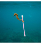

GreenDistrict
Les déchets
Le code couleur des poubelles peut être différentes entre chaque commune, renseigne toi auprès de ta mairie pour être fixé
Les bacs bleus/jaunes:
-Les bouteilles, flacons et bidons en plastique avec leur bouchon
-Les emballages en métal
-Les cartons et papiers
Les bacs vert ou gris:
-Les sacs poubelles bien fermés, qui contiennent tes déchêts alimentaire et résiduels: du genre mouchoirs, lingettes, les emballages en plastique très légers
 Au lieu de mettre des poubelles en image,je te met cet hyppocampe avec son cotton-tige qu'il n'a sans doute pas acheté
Les cas spécifiques
- -Les piles, ampoules et cartouches: tu trouveras des collectes dans les magasins qui vendent ce type de produits.
- -Les vêtement usagers: tu peux les déposer dans les containers de collecte installés en ville ou alors dernièrement les revendre sur différents application.
- -Les médicaments inutilisés ou périmés: tu les rends à ton pharmacien tout simplement.